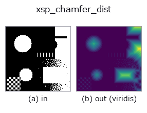

region op• データ種: region → image
• 呼び出し: fullseye.apply(img, "xsp_chamfer_dist", a=0.5, b=0.5) (2-D は 1 画像 + 2 スカラつまみ a,b∈[0,1] のモデル)

*図は合成の入力 128×128 で実際に走らせた出力。左が入力、右が出力。点群は上から見た散布(明るさ = z)、1-D 列は折れ線、体積は z 方向の最大値投影、動画は中央フレーム、複素画像は振幅、絵にならない返り値は値そのもの。*
*出力は viridis 風の疑似カラー(暗い紫 = 小、黄 = 大)。距離・位相・向き・深度のような「量の場」を読むため。*
*つまみ a は出力を変えない(実測: 0.1 / 0.5 / 0.9 で同一)。*
*つまみ b は出力を変えない(実測: 0.1 / 0.5 / 0.9 で同一)。*
段階(前置きの op → この op。左から順):
▸ xsp_chamfer_dist: stages (docs site)
別の画像でも(合成シーン / 写真 / 硬貨。上段が入力、下段がその出力。つまみは既定):
▸ xsp_chamfer_dist: other inputs (docs site)
最も近い背景画素までの市街地距離（チャンファー距離）を [0,1] に正規化して返す。
★2026-09-02: 縮退入力での 符号つきセンチネル を潰す。
`scipy.ndimage.distance_transform_cdt` は「背景画素が 1 つも無い」入力に対して
距離ではなく -1 を全画素に書く(実測: `np.ones((8,8), bool)` -> min=max=-1)。
旧実装はそれをそのまま `_norm` に通していたので、**塗り潰された領域の距離マップが
一様 -1 の「画像」**になっていた —— 例外も警告も出ないまま値域 [0,1] の image 契約を
破り、保存・表示では全面が黒に潰れる。
背景が無い = どの画素も「無限に遠い」ので、正規化後の正直な答えは 一様 1.0。
前景が無いときは距離 0 の一様 0.0。どちらも符号つきの値を返さない。
• サンプルデータ カタログ(DL URL / ライセンス) — 2-D は skimage.data(BSD/public)+ 合成、3-D は実データ源(Stanford/PDS 等)の DL URL。
• 演算子の来歴・参考文献 — この op 族の元になった研究/手法の出典。
• アルゴリズムの正典(著者・年)と用途は上記ファミリ使い方ガイドに記載。
下のプログラムは実際に走ることを確かめてある(図と同じ入力)。Studio のヘルプではこのブロックがボタンになり、その場で読み込んで実行できる。
threshold 0.50 0.50 xsp_chamfer_dist 0.50 0.50
▸ Load this pipeline · Load & run
• gallery2d_region — py -3.11 examples/gallery2d_region.py
image を入力に取れる)identity · gaussian · mean_box · bilateral · unsharp · median · min_filter · max_filter
region)reg_erode · reg_dilate · reg_open · reg_close · fill_holes · select_largest · remove_small · invert_region
*Provenance: ops.py — 2D operator registry. この per-op ノートは tools/opdocs.py md が自動生成(手編集しない)。*
© 2026 Kazufumi Furuse — Fullseye operator documentation. Licensed under Apache-2.0.
{kind=link}
{kind=link}